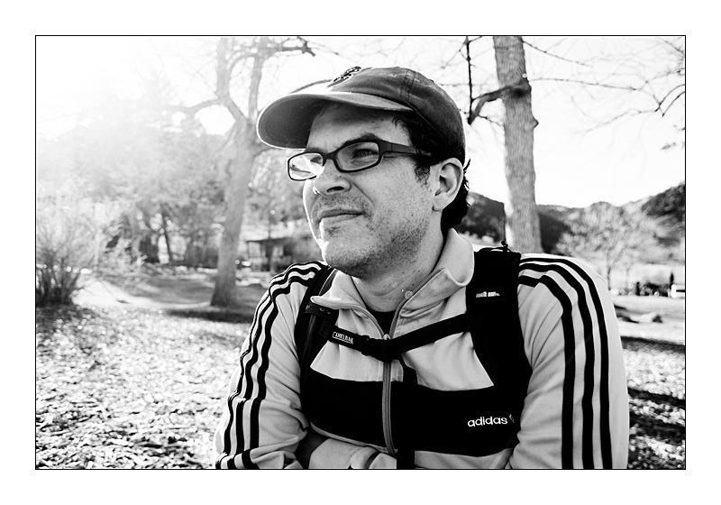

<section data-background="lotwimg/earth.jpeg"> <section style="background-color:rgba(255, 255, 255, 0.4)"> <h1>Languages of the World</h1> <h3>Will Styler</h3> </section> --- # Dramatis Personae --- ## Will Styler Instructor <img class="big" src="img/will.jpg"> --- ## Niloo Khalili TA - Morning Recitations <img class="big" src="lotwimg/niloo.jpg"> --- ## Kevin Gould TA - Afternoon Recitations  --- # Who are you? * What's your year? * Ling majors? * Monolingual/Bilingual/Multilingual? * What languages do we speak? --- ### There are 7,106 living languages in the world <small>[(Source)](https://www.ethnologue.com)</small> --- ## We'd better get started! --- # Aari **Classification**: Afro-Asiatic, Omotic, South **Spoken in:** Ethiopia Best described in Hayward, Richard J. 1990. *Notes on the Aari language*. In Hayward, R. J. (ed.), Omotic language studies, 425-493. London: School of Oriental and African Studies. --- # Aasáx **Classification**: Afro-Asiatic, Cushitic, South **Spoken in:** Tanzania Currently being absorbed into Maasai, only 100 speakers left. --- # Abadi **Classification**: Austronesian, Malayo-Polynesian, Central-Eastern Malayo-Polynesian, Eastern Malayo-Polynesian, Oceanic, Western Oceanic, Papuan Tip, Peripheral, Central Papuan, West Central Papuan, Gabadi **Spoken in:** Papua New Guinea Around 4300 speakers and growing, although many speakers also speak Tok Pisin. --- # What have I done?!?  --- ### That would be doing it wrong. * ... but *everybody* starts off thinking like that --- ### "Oh, you're a linguist? Cool!" ## "How many languages do you speak?" <!-- .element: class="fragment" --> --- ### "Oh, you're a doctor? Cool!" ## "How many diseases do you have?" <!-- .element: class="fragment" --> --- ## Linguists study Language. * (Note the Capital "L", it's important) * We study how Language works, how humans use it, and what happens in different languages to get communication done. * Learning about languages can be a part of that, but it's not the whole! --- ### This class will teach you about Language, by talking about languages. * Goal 1: Learn how linguists talk about Language * Goal 2: Learn about the incredible diversity of language in the world * Goal 3: Learn about the life cycle of languages * Goal 4: Turn you all into Linguists. * Goal 5: Talk about languages! --- ### So, "Languages of the world"... * That's pretty ambitious. * 28 lectures, 7140 languages = 255 languages/day * ***NOPE!*** --- ## We're going to focus on language families and areas * Rather than talking about Spanish, and Italian, and French, and Portuguese, and Romanian, we'll talk about *The Romance Languages* * Rather than talking about Hawai'ian, Samoan, Rapa Nui, Tahitian, we might talk about *Polynesian Languages* * Rather than talking about the 850 languages (!!!) spoken in Papua New Guinea, we'll just talk about a few of them. * *We will abstract to survive* --- ## We'll organize the course by families and areas * We'll start with some information for your toolkit * Then we'll talk about areas and language families * We'll mix in lots of language-specific talks by gigantic nerds --- # What do I have to do to get an A? --- # Learn, then prove it. --- ## There are three types of learning you'll be doing --- ### Learning facts and relationships * "Is German Indo-European or Afro-Asiatic?" * "What morphological feature do most Wakashan languages have in common?" * "Which of the below languages is critically endangered?" * *** Facts are tested in quizzes and exams*** --- ### Understanding Concepts and Ideas * "What makes an Ergative language ergative?" * "Why do languages with small consonant inventories have long words?" * "Explain polysynthetic morphology in 250 words or less." * *** Understanding is shown in exams and homeworks *** --- ### Interacting with languages * "Tell me about Maasai speakers and their culture." * "Discuss which feature of Turkish you felt was most interesting, and why?" * "Construct a language, and translate "Velociraptors ate my homework" into it." * *** This interaction happens entirely in homeworks and recitations *** --- ## So, if you want an A... * You'll learn facts for quizzes and exams * You'll understand concepts for homeworks and exams * You'll interact with languages in homeworks and recitations * You'll pay attention to the syllabus! --- ## Syllabus and Schedule * [Download the Syllabus](http://savethevowels.org/world/LING1020Syllabus.pdf) * [Download the Schedule](http://savethevowels.org/world/LING1020Schedule.pdf) --- # Questions? --- ### Syllabus Stuff which bears repeating <img class="big" src="img/bearsrepeating.jpg"> --- * Check your email! * Come to office hours. * Skype too! * Buy your clicker before next Wednesday! * **We are here to help!** --- # Clickers! * Clicker questions will start counting for points in two weeks * Easy points! --- <section data-background="img/clickerbkgrnd.png"></section> ### This is a clicker question! A) One Answer B) Another C) A third D) The answer is D E) I'm not paying attention. --- <section data-background="img/clickerbkgrnd.png"></section> ### When should you tell Will about any special accomodations you'll need? A) Within the first two weeks B) By the end of the semester C) When I'm freaking out about my grade in December D) I won't tell him, then pretend I did when it's an issue in December --- <section data-background="img/clickerbkgrnd.png"></section> ### When should you tell Will about any special accomodations you'll need? A) <correct>Within the first two weeks</correct> B) By the end of the semester C) When I'm freaking out about my grade in December D) I won't tell him, then pretend I did when it's an issue in December --- ### Other Administrative Stuff * If you're waitlisted, switch recitations! --- # Why all the linguistics terms? --- ### Because you need vocabulary to discuss differences intelligently --- <center> <table> <tr> <th><img height="1000" src="lotwimg/daligiraffe.jpg"></th> <th></th> <th></th> </tr> </table> </center> --- <lang>English</lang><br><ldata>IE:Germanic - All over</ldata> He grew up to become a young man <br> <lang>Nuuchahnulth</lang><br><ldata>Wakashan - Vancouver Island</ldata> haː̣ẃiɬaʎs̃ǐʔaʎ haː̣-ẃiɬaʎ̃-sǐʎ̃-aʎ̃ young.man-momentive-time-Now --- # Why bother studying different languages at all? --- ### Because every language is a unique little snowflake <img class="big" src="img/snowflake.jpg"> --- --- ## Languages differ in the sounds they use --- <img src="phonmedia/nonpulmonics.png"> --- --- <lang>Mandarin Chinese</lang><br><ldata>Sino-Tibetan, Chinese - China</ldata> <center> <table> <tr> <td>西施死时四十四<br> 十四是十四<br> 四十是四十<br> 十四不是四十<br> 四十不是十四。<br></td> <td>Xi shi si shi si shi si<br> Shi si shi shi si<br> Si shi shi si shi<br> Shi si bu shi si shi<br> Si shi bu shi shi si.<br></td> <td> /ɕi ʂi si ʂi si ʂi si<br> ʂi si ʂi ʂi si<br> si ʂi ʂi si ʂi<br> ʂi si bu ʂi si ʂi<br> si ʂi bu ʂi ʂi si./<br></td> </tr> </table> Xi Shi died in 44. Fourteen is fourteen. Forty is forty. Fourteen is not forty. Forty is not fourteen. </center> --- <lang>Mandarin Chinese</lang><br><ldata>Sino-Tibetan, Chinese - China</ldata> <center> <table> <tr> <td>西施死时四十四<br> 十四是十四<br> 四十是四十<br> 十四不是四十<br> 四十不是十四。<br></td> <td>Xi shi si shi si shi si<br> Shi si shi shi si<br> Si shi shi si shi<br> Shi si bu shi si shi<br> Si shi bu shi shi si.<br></td> <td> /ɕi ʂi si ʂi si ʂi si<br> ʂi si ʂi ʂi si<br> si ʂi ʂi si ʂi<br> ʂi si bu ʂi si ʂi<br> si ʂi bu ʂi ʂi si./<br></td> </tr> </table> </center> <audio data-autoplay src="phonmedia/mandarintwistercharles.wav"></audio> --- <lang>Mandarin Chinese</lang><br><ldata>Sino-Tibetan, Chinese - China</ldata> <center> <table> <tr> <td>西施死时四十四<br> 十四是十四<br> 四十是四十<br> 十四不是四十<br> 四十不是十四。<br></td> <td>Xi shi si shi si shi si<br> Shi si shi shi si<br> Si shi shi si shi<br> Shi si bu shi si shi<br> Si shi bu shi shi si.<br></td> <td> /ɕi ʂi si ʂi si ʂi si<br> ʂi si ʂi ʂi si<br> si ʂi ʂi si ʂi<br> ʂi si bu ʂi si ʂi<br> si ʂi bu ʂi ʂi si./<br></td> </tr> </table> </center> <audio data-autoplay src="phonmedia/mandarintwisterdimsun.wav"></audio> --- ## Languages differ in how they put sounds together --- <lang>English</lang><br><ldata>I-E, Germanic, West Germanic - Damned Near Everywhere</ldata> 'Strengths' (/stɹɛŋkθs/) --- <lang>Russian</lang><br><ldata>I-E, Slavic, East - Russia</ldata> ‘Glance’ - Всгляд (/vzglʲat/) ‘Of Construction’ - строительств (/strʌˈʲitʲɛlʲstf/) --- <lang>Czech</lang><br><ldata>I-E, Slavic, West, Czech-Slovak - The Czech Republic</ldata> Strč prst skrz krk ‘Stick your finger down your throat’ --- ### This means that roosters say different things in different languages <img class="big" src="img/roosters.png"> --- ## Languages differ in how they work with words --- <lang>English</lang><br><ldata>I-E, Germanic, West Germanic - Damned Near Everywhere</ldata> Three cats robbed the shopping mall. Three cat-s rob-ed the shop-ing mall --- <lang>Wichita</lang><br><ldata>Caddoan, Northern Caddoan - Oklahoma</ldata> Ti’i haskwákiyakirikickichis (‘Until there was just a little trickle of water’) --- <lang>Wichita</lang><br><ldata>Caddoan, Northern Caddoan - Oklahoma</ldata> Kiyakiicíwa:cé:hirʔasʔirhawi (‘There was the big buffalo lying there.’) * <danger>This language has one speaker left.</danger> --- <a href="http://www.endlessloopphotography.com/2011_02_01_archive.html"><img class="big" src="humorimg/surprisedbuffalo.jpg"></a> * <src>(Yeah, it's not an American Bison, but you google "Surprised Buffalo" and do better)</src> --- ## Languages have different tricks up their sleeves --- ### Repeating a word is useful --- <lang>Indonesian</lang><br><ldata>Austronesian:Malayo-Polynesian - Indonesia</ldata> * piring ‘plate’ * piring-piring ‘plates’ * rumah ‘house’ * rumah-rumah ‘houses’ --- <lang>Indonesian</lang><br><ldata>Austronesian:Malayo-Polynesian - Indonesia</ldata> Reduplicating pronouns makes them snarky * beliau (He/She formal) * Jangan berbuat gaduh di sini, beliau-beliau sedang rapat! * `Don’t be noisy, the big shots are having a meeting!' --- <lang>English</lang><br><ldata>I-E:Germanic - Damned Near Everywhere</ldata> * `He's a big, big guy' * `She bought a teeny-tiny bike at Target' --- ### Let's pretend your name is a really common word, like "Will" * Solution: Move to Bulgaria! --- <lang>Bulgarian</lang><br><ldata>Indo-European:Slavic - Bulgaria</ldata> * 'Will' "Will" (Proper name, Nominative Case) * 'Wille' "Will" (Vocative case) --- ## Languages have unique terms and structures to discuss the world --- <lang>Finnish</lang><br><ldata>Uralic, Finnic - Finland</ldata> 'Sisu' * [(Just read the Wikipedia Page on it)](http://en.wikipedia.org/wiki/Sisu) --- <lang>Yámana</lang><br><ldata>Linguistic Isolate - Chile</ldata> 'Mamihlapinatapai' * "a look shared by two people, each wishing that the other will offer something that they both desire but are unwilling to suggest or offer themselves."[<src>[1]</src>](http://www.wordfocus.com/mamihlapinatapai.html) * <danger>This language has one speaker left, and she's 85.</danger> --- <lang>Turkish</lang><br><ldata>Turkic - Turkey</ldata> * 'gel-di' "He came" * 'gel-miş' "He came, to the best of my knowledge" --- <lang>English</lang><br><ldata>IE:Germanic - All over the place</ldata> * 'Bromance' * '#swag' * 'Bachelor' --- ## Language is incredible * We can "do" communication in countless different ways * The way that we do communication is shaped by our cultures * ... and perhaps, it shapes our cultures and thoughts in return --- --- ## Next time: How are languages born, and how do we group them? * <danger>Please read Pereltsvaig Chapter 1 before lecture!</danger> --- ## See you all Wednesday! --- <huge>Thank you!</huge> http://savethevowels.org/world/slides/lotw_1.html